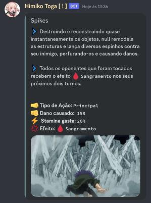

Nosso servidor foi feito para divertir as diversas pessoas
temos sistemas incriveís, bem elaboras, podendo seguir os dois lados da moeda
herói ou vilão, tudo é permitido para você fazer, teremos momentos "dark", claro, sem muito
explícito, não queremos transformar o sevidor +18 não é, aqui vc pode se divertir, ter lutas
magnificas,participar de missões, eventos, crimes, criar seu próprio negócio, além de tudo
suas individualidades, quirks, acredito que estava esperando por isso, como é um RPG de
boku no hero, não poderia deixar de lado, tudo dependerá da sua sorte para qual terá
se divirta bastante, sinta-se livre para explorar os diversos canais
você será um herói? ou um vilão que acabará com a vida de todos ao seu redor
tudo dependerá das suas escolhas
mais uma coisa, toma cuidado, você vai precisar. :)
Muitas quirks para vc se divertir.
Aqui vc verá algumas quirk em suas receptíveis classes,
as classes são divididas entre comum, rara, epíca, lendária e mitica,
quase ia me esquecendo, também tem as secretas, como o nome diz,
você só descobrirá se pegar a mesma.
Boa Sorte campeão.
Quirk Gyrate
Aqui podemos ver uma quirk da classe comum
umas das mais fáceis de conseguir
sendo a gyrate que é a que está na imagem
ela permite girar qualquer parte de seu corpo em altas velocidades
semelhante a uma broca
sendo utíl para algumas situações e lutar contra os outros
mas não sendo algo sobrenatural e tão impressionante
possuindo dois ataques para auxiliar em seu combate
ninguém pegou essa individualidade ainda
tera a sorte ou o azar de tê-la.
Quirk Rabbit
Essa quirk é classificada como sendo uma quirk rara
sendo até bem jogavéis
a maioria das quirk rara já são bem conhecidas em boku no hero
atraí uma atenção do publíco ainda maior por serem mais "Legais" a vista dos civis
e além de serem mais poderosas
aqui vemos a quirk rabbit, a quirk de mirko no anime
Quirk Erasure
A classe epica, sendo uma das melhores que tem no servidor
dando muito mais dano e tendo mecanicas interessante
uma destas é Erasure, tendo a capacidade de cancelar as quirk que os outros usarem por um tempo
sendo bem utíl para enfrentar até os mais poderosos das classes
apenas cuidado a utilizar, você tem que manter seus olhos aberto a todo momento
se não a habilidade será desfeita, tendo que esperar um tempo para usar de novo
por enquanto não tem ninguem a utilizando, será que você conseguirá?
Quirk Overhaul
Chegamos na quirks lendárias, muito além das outras quirks
as individualidades desta classe tem um dano muito maior do que as comuns
raras, epicas e mais efeitos do que as próprias epicas
sendo cobiçada por todos, são todas bem poderosas, até demais
então se conseguir uma, você pode se considerar sortudo campeão
essa quirk ao lado, se chama "Overhaul"
ela conseguiu aguentar um tempo contra o Deku utilizando one for all 100%
sendo bem poderosa, estando no meta no serveidor
pelos seus efeitos e skills poderosas que a mesma tem
o atual usuário desta quirk é o @Jaapahehe.


Quirk One For All
One For All, uma quirk tão forte e tendo varíos segredos
um poder misterioso que não se consegue normalmente
essa individualidade está na classe mitíca
a mais forte que tem dentro do servidor
tendo varías mecanicas, muitas skills, segredos.. mas acima de tudo
carregando a esperança para todos ou.. a destruição
depende de qual quirk que seja na classe mitíca
Uma frase que define essa quirk
"A primeira pessoa cultiva o poder e depois o passa para outra.
A próxima refina e repassa novamente.
Desta forma, aqueles que clamam para serem salvos
aqueles com corações corajosos e verdadeiros
se unem para formar uma rede cristalina de poder!"